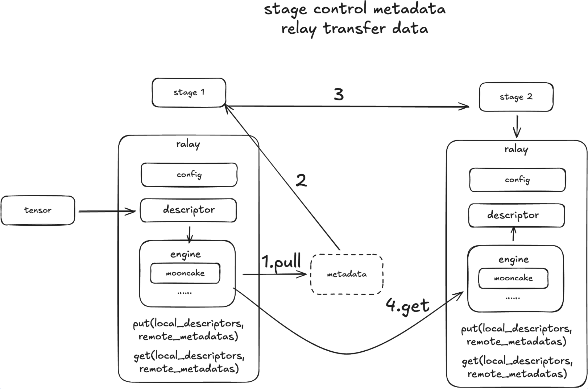

Relay#
Motivation#
Relay is engineered for high-efficiency data transmission across distributed systems, utilizing RDMA and other transport protocols. It facilitates rapid, low-latency data movement between cluster nodes, with native support for NVLink, RDMA, and TCP. To decompose the Omni model into encoder, autoregressive, diffusion, and decoder stages, we must account for their significantly varying computational intensities and non-uniform scaling requirements (deployment ratios are not 1:1:1). Consequently, these stages must be deployed across disparate computational resources.
To bridge these stages, we introduce a Relay designed to orchestrate activation transfers within this heterogeneous environment. This engine addresses three specific transmission scenarios:
Intra-Device: When two stages run as separate processes on the same GPU, the system must ensure a zero-copy mechanism to eliminate any redundant VRAM duplication.
Intra-Node: For cross-GPU communication within a single node, the optimal path is NVLink P2P. The system should prioritize this, falling back to RDMA and finally to Shared Memory (SHM) only as a last resort.
Inter-Node: For communication between nodes, priority is given to Multi-Node NVLink (leveraging features like GB200 MMNVL). The secondary option is RDMA (InfiniBand/RoCE), with standard TCP/IP serving as the ultimate fallback.
The primary goal of the Transfer Engine is to abstract away these low-level transport details, allowing the upper-level stages to focus purely on computation. Current frameworks struggle to seamlessly cover all three scenarios simultaneously. While torch.distributed handles intra-node communication effectively, it falls short regarding long-term inter-node requirements. Mooncake, however, demonstrates significant advantages in efficiently addressing all three transfer tiers.
Design#

API Design#
We will use an example below to demonstrate the APIs with NIXL backend. We can create different connectors for different stages and then use the put_async and get_async APIs to transfer data between them.
import torch
from sglang_omni.relay import NixlRelay
import asyncio
async def test_nixl():
stage1_connector = NixlRelay(
engine_id="stage0",
device="cuda:0"
)
stage2_connector = NixlRelay(
engine_id="stage2",
device="cuda:1"
)
tensor_to_transport = torch.randn(4, 128, device=stage1_connector.device)
put_op = await stage1_connector.put_async(tensor_to_transport)
metadata = put_op.metadata
# prepare receier tensor buffer
tensor_to_receive = torch.zeros(4, 128, device=stage2_connector.device)
get_op = await stage2_connector.get_async(metadata, tensor_to_receive)
await get_op.wait_for_completion()
await put_op.wait_for_completion()
# check whether the data is transferred correctly
# NOTE: we need to move them to the same device to compare them
assert torch.equal(tensor_to_transport.cpu(), tensor_to_receive.cpu())
print("Data transferred correctly")
if __name__ == "__main__":
asyncio.run(test_nixl())
Supported Backends#
Relay provides a unified API for all supported backends. Currently, we support:
NCCLSHMNIXLMooncake